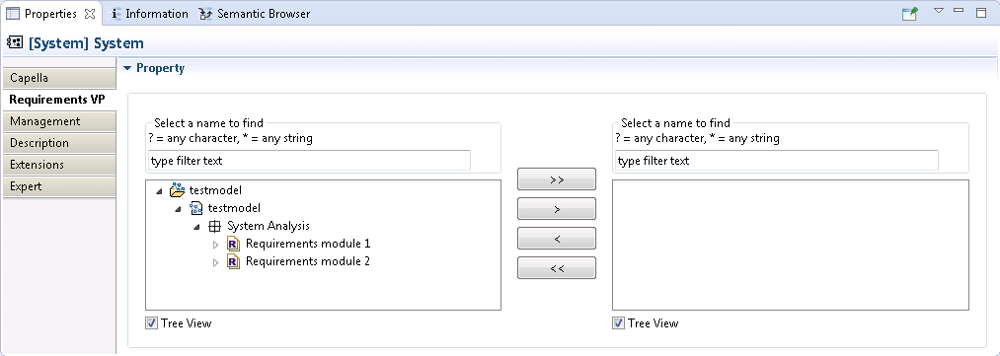

...
Example of Requirements and their relations to/from Capella Elements:

When you allocate a requirement to or from a capella element, a relation is created under the requirement.
Depending on which of the requirement or the capella element is the source or the target, the relation can be:
| Source | Target | Relation | In example |
|---|---|---|---|
| Requirement | CapellaElement | CapellaIncomingRelation | is allocated to |
| CapellaElement | Requirement | CapellaOutgoingRelation | satisfies |
| Requirement | Requirement | InternalRelation | refines |
So, using the requirement allocation, depending on your current element and the direction of the relation, a different relation is created:
| Context | In-link | Out-link |
|---|---|---|
| CapellaElement (allocating Requirement) | CapellaIncomingRelation | CapellaOutgoingRelation |
| Requirement (allocating CapellaElement) | CapellaOutgoingRelation | CapellaIncomingRelation |